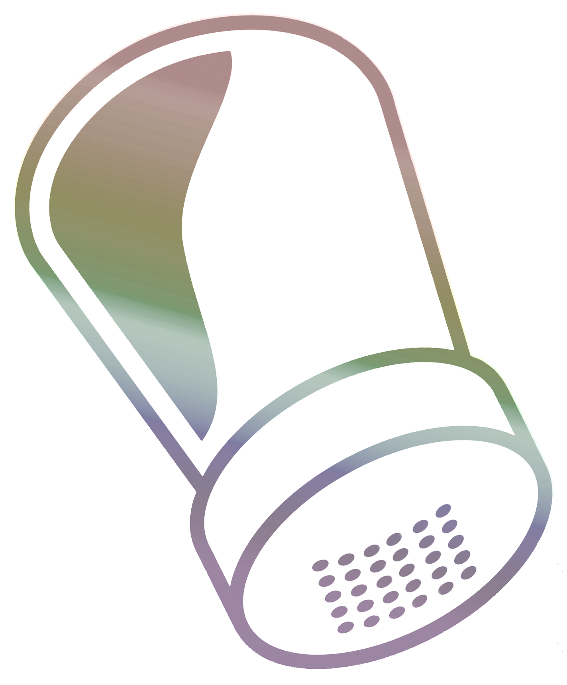
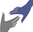

home
about
sponsors
call for abstracts
registration
local information
program
salt(
ed
)
pump
for presenters
satellite sessions
diachronies of negation
(in)definiteness & genericity
philosophy of linguistics